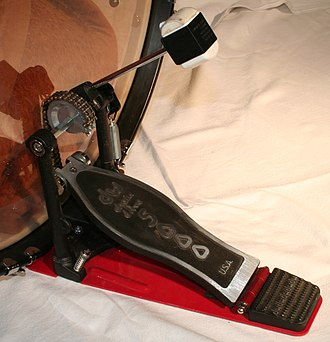
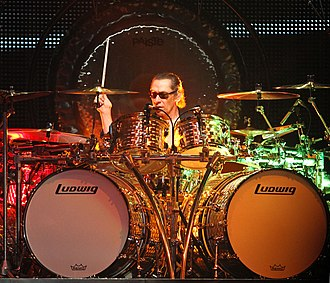

The bass drum is a large drum that produces a note of low definite or indefinite pitch. The instrument is typically cylindrical, with the drum's diameter much greater than the drum's depth, with a struck head at both ends of the cylinder. The heads may be made of calfskin or plastic and there is normally a means of adjusting the tension either by threaded taps or by strings. Bass drums are built in a variety of sizes, but size does not dictate the volume produced by the drum. The pitch and the sound can vary much with different sizes,but the size is also chosen based on convenience and aesthetics. Bass drums are percussion instruments and vary in size and are used in several musical genres. Three major types of bass drums can be distinguished.
History
The earliest known predecessor to the bass drum was the Turkish davul, a cylindrical drum that featured two thin heads. The heads were stretched over hoops and then attached to a narrow shell.To play this instrument, a person would strike the right side of the davul with a large wooden stick, while the left side would be struck with a rod.When struck, the davul produced a sound much deeper than that of the other drums in existence. Because of this unique tone, davuls were used extensively in war and combat, where a deep and percussive sound was needed to ensure that the forces were marching in proper step with one another.The military bands of the Ottoman Janissaries in the 18th century were one of the first groups to utilize davuls in their music; Ottoman marching songs often had a heavy emphasis on percussion, and their military bands were primarily made up of davul, cymbal and kettle drum players.
Davuls were ideal for use as military instruments because of the unique way in which they could be carried. The Ottoman janissaries, for example, hung their davuls at their breasts with thick straps.This made it easier for the soldiers to carry their instruments from battle to battle. This practice does not seem to be limited to just the Ottoman Empire, however; in Egypt, drums very similar to davuls were braced with cords, which allowed the Egyptian soldiers to carry them during military movements.
The davul, however, was also used extensively in non-military music. For example, davuls were a major aspect of Turkish folk dances.In Ottoman society, davul and shawm players would perform together in groups called davul-zurnas, or drum and shawm circles.
Kit Drumming
Bass drum pedal

In 1900, Sonor drum company introduced its first single bass drum pedal. William F. Ludwig made the bass drum pedal workable in 1909, paving the way for the modern drum kit.A bass drum pedal operates much the same as the hi-hat control; a footplate is pressed to pull a chain, belt, or metal drive mechanism downward, bringing a beater or mallet forward into the drumhead. The beater head is usually made of either felt, wood, plastic, or rubber and is attached to a rod-shaped metal shaft. The pedal and beater system are mounted in a metal frame and like the hi-hat, a tension unit controls the amount of pressure needed to strike and the amount of recoil
double bass pedal
A double bass drum pedal operates much the same way as a single bass drum pedal does, but with a second footplate controlling a second beater on the same drum. Most commonly this is attached by a shaft to a remote beater mechanism alongside the primary pedal mechanism.One notable exception to this pattern is the symmetrical Sleishman twin bass drum pedal.Alternatively, some drummers opt for two separate bass drums with a single pedal on each, for a similar effect.
Drop-clutch
When using a double bass drum pedal, the foot which normally controls the hi-hat pedal moves to the second bass drum pedal, and so the hi hat opens and remains open. A drop clutch can be used to keep the hi-hat in the closed position, even with the foot removed from the pedal.
Pedal techniques

There are 3 primary ways to play single strokes with one foot. The first is heel-down technique, where the player's heel is planted on the pedal and the strokes are played with the ankle. This stroke is good for quiet playing and quick syncopated rhythms. The next technique is heel-up, where the player's heel is lifted off of the pedal and the strokes originate from the hip. The ankle is still flexed with each stroke, but the full weight of the leg can be used to add additional power for louder playing situations. Lifting the heel allows access to several double stroke techniques as well. The third primary technique is the floating stroke where the heel is lifted off the pedal as in heel-up, but the stroke is played primarily from the ankle as in heel-down. This motion can allow greater speed and higher note density at louder volumes but is not efficient for slow tempos or sparse rhythms.
Drummers such as Thomas Lang, Virgil Donati, and Terry Bozzio are capable of performing complicated solos on top of an ostinato bass drum pattern. Thomas Lang, for example, has mastered the heel-up and heel-down (single- and double-stroke) to the extent that he is able to play dynamically with the bass drum and to perform various rudiments with his feet.
In order to play "doubles" on the pedal, drummers can employ 3 main techniques: slide, swivel, or heel-toe. In the slide technique, the pedal is struck around the middle area with the ball of the foot. As the drum produces a sound, the toe is slid up the pedal. After the first stroke, the pedal will naturally bounce back, hit the toe as it slides upwards, and rebound for a second strike. In the swiveling double, the pedal is struck once in the normal manner for the first note, then the heel is immediately rotated around the ball of the foot to the side of the pedal while simultaneously playing a second stroke. This rotation can be to the inside or outside, either will work, and results in a faster second stroke than is ordinarily possible.In the heel-toe technique the foot is suspended above the foot-board of the pedal. The entire foot is brought down and the ball of the foot strikes the pedal. The foot snaps up, the heel comes off the footboard, and the toes come down for a second stroke. Once mastered either technique allows the player to play very fast double strokes on the bass drum. Noted players include Rod Morgenstein, Tim Waterson (who formerly held the world record for the fastest playing on a bass drum, using double bass), Tomas Haake, Chris Adler, Derek Roddy, Danny Carey and Hellhammer. The technique is commonly used in death metal and other extreme forms of music where triggers and double bass are typically employed. Double strokes can only properly replace single strokes for long runs of evenly spaced notes when using triggers or sample replacement as the sound is inherently uneven. Some tempos are only possible with double strokes, however.
 The bass drum is a large drum that produces a note of low definite or indefinite pitch. The instrument is typically cylindrical, with the drum's diameter much greater than the drum's depth, with a struck head at both ends of the cylinder. The heads may be made of calfskin or plastic and there is normally a means of adjusting the tension either by threaded taps or by strings. Bass drums are built in a variety of sizes, but size does not dictate the volume produced by the drum. The pitch and the sound can vary much with different sizes,but the size is also chosen based on convenience and aesthetics. Bass drums are percussion instruments and vary in size and are used in several musical genres. Three major types of bass drums can be distinguished.
The bass drum is a large drum that produces a note of low definite or indefinite pitch. The instrument is typically cylindrical, with the drum's diameter much greater than the drum's depth, with a struck head at both ends of the cylinder. The heads may be made of calfskin or plastic and there is normally a means of adjusting the tension either by threaded taps or by strings. Bass drums are built in a variety of sizes, but size does not dictate the volume produced by the drum. The pitch and the sound can vary much with different sizes,but the size is also chosen based on convenience and aesthetics. Bass drums are percussion instruments and vary in size and are used in several musical genres. Three major types of bass drums can be distinguished.